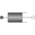

DamperLinear 1D rotational damper |

|
Information
This information is part of the Modelica Standard Library maintained by the Modelica Association.
Linear, velocity dependent damper element. It can be either connected between an inertia or gear and the housing (component Fixed), or between two inertia/gear elements.
See also the discussion State Selection in the User's Guide of the Rotational library.
Parameters (4)
| phi_nominal |
Value: 1e-4 Type: Angle (rad) Description: Nominal value of phi_rel (used for scaling) |
|---|---|
| stateSelect |
Value: StateSelect.prefer Type: StateSelect Description: Priority to use phi_rel and w_rel as states |
| useHeatPort |
Value: false Type: Boolean Description: =true, if heatPort is enabled |
| d |
Value: Type: RotationalDampingConstant (N·m·s/rad) Description: Damping constant |
Connectors (3)
| flange_a |
Type: Flange_a Description: Left flange of compliant 1-dim. rotational component |
|
|---|---|---|
| flange_b |
Type: Flange_b Description: Right flange of compliant 1-dim. rotational component |
|
| heatPort |
Type: HeatPort_a Description: Optional port to which dissipated losses are transported in form of heat |
Used in Examples (9)
|
Modelica.Mechanics.MultiBody.Examples.Elementary Simple double pendulum with two revolute joints and two bodies |
|
|
Modelica.Mechanics.MultiBody.Examples.Elementary Demonstrate how to initialize a double pendulum so that its tip starts at a predefined position |
|
|
Modelica.Mechanics.MultiBody.Examples.Elementary Determine spring constant such that system is in steady state at given position |
|
|
Modelica.Mechanics.MultiBody.Examples.Elementary Simple pendulum with one revolute joint and one body |
|
|
Modelica.Mechanics.MultiBody.Examples.Elementary Demonstrate the modeling of a user-defined gravity field |
|
|
Modelica.Mechanics.MultiBody.Examples.Loops Planar four bars mechanism with one kinematic loop (with RevolutePlanarLoopConstraint joint) |
|
|
Modelica.Mechanics.Rotational.Examples First example: simple drive train |
|
|
Modelica.Mechanics.Rotational.Examples First example: simple drive train with grounded elements |
|
|
Modelica.Mechanics.Rotational.Examples Demonstrate the modeling of heat losses |